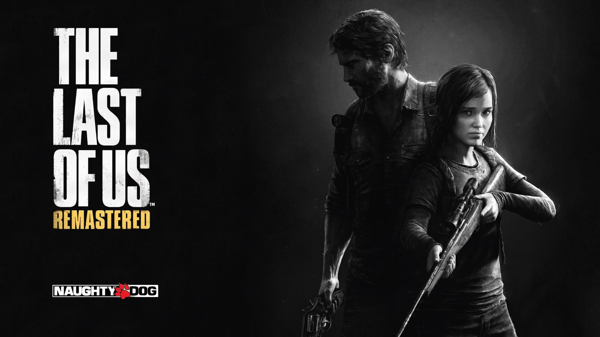

PS4 es un sistema de entretenimiento digital y la cuarta consola de sobremesa desarrollada por Sony Computer Entertainment. Cuenta con un procesador APU de ocho núcleos x86-64 Jaguar desarrollado por AMD.
galeria
The Last of Us es un videojuego de acción-aventura y supervivencia de terror desarrollado por la compañía estadounidense Naughty Dog y distribuido por Sony Computer Entertainment para la consola PlayStation 3 en 2013.

Destiny es un videojuego de disparos en primera persona, en forma de multijugador masivo en línea en un mundo abierto de ficción especulativa. Fue desarrollado por Bungie y publicado por Activision como parte de un contrato de producción de diez años